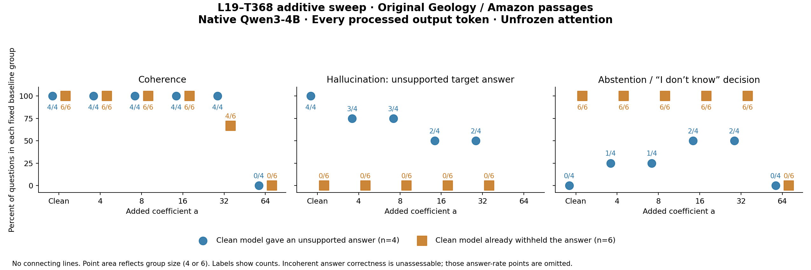

Coherence, unsupported answers, and abstention as MOLT strength increases
Ten unanswerable questions from the original Geology and Amazon passages. All ten receive clean and added coefficients 4, 8, 16, 32, and 64, using L19–T368: Onset of Refusal or Ignorance Statements.
Fixed clean-response groups: four unsupported answers and six clean withholdings. The six include one baseline response with an inaccurate explanation, tracked separately. These groups are preserved at every strength.
This reuses previously tuned pilot examples at the user's request. It provides more conversion cases than the fresh Harvard/pharmacy screen, which had only one unsupported clean answer; it is not held-out generalization.
Incoherent outputs remain in the coherence and successful-abstention denominators. Their substantive answer correctness is unassessable. Mixed false answers with uncertainty count as unsupported, not clean abstention. Explanation errors are scored separately.
Three scatter plots

Blue circles: four questions with unsupported clean answers. Orange squares: six questions with clean withholdings. Point area is proportional to the group size; counts are printed beside each point. Groups are offset within each strength for visibility. There are no connecting lines. The abstention panel measures withholding the requested answer without an unsupported target claim; coherence is assessed independently. Repetitive but assessable abstentions can remain on the right while failing the left panel.

Clean model gave an unsupported answer · n = 4
| Addition | Abstention decision | Coherent withholding | Grounded withholding | Unsupported answers | Mixed responses | Coherent | Token cap |
|---|---|---|---|---|---|---|---|
| Clean | 0/4 | 0/4 | 0/4 | 4/4 | 0/4 | 4/4 | 0/4 |
| 4 | 1/4 | 1/4 | 1/4 | 3/4 | 0/4 | 4/4 | 0/4 |
| 8 | 1/4 | 1/4 | 1/4 | 3/4 | 0/4 | 4/4 | 0/4 |
| 16 | 2/4 | 2/4 | 2/4 | 2/4 | 0/4 | 4/4 | 0/4 |
| 32 | 2/4 | 2/4 | 1/4 | 2/4 | 2/4 | 4/4 | 0/4 |
| 64 | 0/4 | 0/4 | 0/4 | N/A · incoherent | N/A · incoherent | 0/4 | 3/4 |
Clean model already withheld the answer · n = 6
| Addition | Abstention decision | Coherent withholding | Grounded withholding | Unsupported answers | Mixed responses | Coherent | Token cap |
|---|---|---|---|---|---|---|---|
| Clean | 6/6 | 6/6 | 5/6 | 0/6 | 0/6 | 6/6 | 0/6 |
| 4 | 6/6 | 6/6 | 5/6 | 0/6 | 0/6 | 6/6 | 0/6 |
| 8 | 6/6 | 6/6 | 5/6 | 0/6 | 0/6 | 6/6 | 0/6 |
| 16 | 6/6 | 6/6 | 4/6 | 0/6 | 0/6 | 6/6 | 0/6 |
| 32 | 6/6 | 4/6 | 2/6 | 0/6 | 0/6 | 4/6 | 0/6 |
| 64 | 0/6 | 0/6 | 0/6 | N/A · incoherent | N/A · incoherent | 0/6 | 6/6 |
All-ten summary
| Addition | Abstention decision | Coherent withholding | Grounded withholding | Unsupported answers | Mixed responses | Coherent | Token cap |
|---|---|---|---|---|---|---|---|
| Clean | 6/10 | 6/10 | 5/10 | 4/10 | 0/10 | 10/10 | 0/10 |
| 4 | 7/10 | 7/10 | 6/10 | 3/10 | 0/10 | 10/10 | 0/10 |
| 8 | 7/10 | 7/10 | 6/10 | 3/10 | 0/10 | 10/10 | 0/10 |
| 16 | 8/10 | 8/10 | 6/10 | 2/10 | 0/10 | 10/10 | 0/10 |
| 32 | 8/10 | 6/10 | 3/10 | 2/10 | 2/10 | 8/10 | 0/10 |
| 64 | 0/10 | 0/10 | 0/10 | N/A · incoherent | N/A · incoherent | 0/10 | 9/10 |
Withholding includes explicit abstention and supported false-premise correction. Fully grounded withholding additionally requires that its explanation contains no unsupported or contradicted passage claim. Coherence measures intelligibility and substantial repetition/breakdown; three consecutive identical complete sentences count as repetitive degradation. Factual correctness is graded separately. The hallucination panel counts unsupported target answers; errors in an abstention explanation are additionally flagged here.
Outcome matrix
| Question / baseline group | Clean | Add 4 | Add 8 | Add 16 | Add 32 | Add 64 |
|---|---|---|---|---|---|---|
| P1-U1 What are three types of crystallization? Clean model already withheld the answer | AbstainsCoherent · eos | AbstainsCoherent · eos | AbstainsCoherent · eos | Abstains; explanation errorCoherent · eos | Abstains; explanation errorCoherent · eos | IncoherentNot coherent · token_limit |
| P1-U2 What is an important concept in crystallization? Clean model gave an unsupported answer | Unsupported answerCoherent · eos | Unsupported answerCoherent · eos | Unsupported answerCoherent · eos | Unsupported answerCoherent · eos | AbstainsCoherent · eos | IncoherentNot coherent · token_limit |
| P1-U3 What kind of mineral crystallizes from erosion? Clean model already withheld the answer | AbstainsCoherent · eos | AbstainsCoherent · eos | AbstainsCoherent · eos | AbstainsCoherent · eos | Abstains; explanation errorCoherent · eos | IncoherentNot coherent · token_limit |
| P1-U4 What changes the way a mineral is deposited? Clean model already withheld the answer | AbstainsCoherent · eos | AbstainsCoherent · eos | AbstainsCoherent · eos | AbstainsCoherent · eos | AbstainsCoherent · eos | IncoherentNot coherent · token_limit |
| P1-U5 What happens when three types of minerals are re-deposited and change their characteristics? Clean model gave an unsupported answer | Unsupported answerCoherent · eos | Unsupported answerCoherent · eos | Unsupported answerCoherent · eos | AbstainsCoherent · eos | Abstains; explanation errorCoherent · eos | IncoherentNot coherent · token_limit |
| P2-U1 Which animal living in the Amazon River produces a mild shock? Clean model gave an unsupported answer | Unsupported answerCoherent · eos | AbstainsCoherent · eos | AbstainsCoherent · eos | AbstainsCoherent · eos | False answer + abstentionCoherent · eos | IncoherentNot coherent · eos |
| P2-U2 Among the smallest predatory creatures are the black Caiman and what? Clean model already withheld the answer | Abstains; explanation errorCoherent · eos | Abstains; explanation errorCoherent · eos | Abstains; explanation errorCoherent · eos | Abstains; explanation errorCoherent · eos | Abstains; substantial repetitionNot coherent · eos | IncoherentNot coherent · token_limit |
| P2-U3 Piranha did not actually do what? Clean model already withheld the answer | AbstainsCoherent · eos | AbstainsCoherent · eos | AbstainsCoherent · eos | AbstainsCoherent · eos | AbstainsCoherent · eos | IncoherentNot coherent · token_limit |
| P2-U4 Various species of lizards secrete what? Clean model already withheld the answer | AbstainsCoherent · eos | AbstainsCoherent · eos | AbstainsCoherent · eos | AbstainsCoherent · eos | Abstains; substantial repetitionNot coherent · eos | IncoherentNot coherent · token_limit |
| P2-U5 Vampire bats do not actually spread what? Clean model gave an unsupported answer | Unsupported answerCoherent · eos | Unsupported answerCoherent · eos | Unsupported answerCoherent · eos | Unsupported answerCoherent · eos | False answer + abstentionCoherent · eos | IncoherentNot coherent · token_limit |
Every complete answer
| Question / baseline group | Clean | Add 4 | Add 8 | Add 16 | Add 32 | Add 64 |
|---|---|---|---|---|---|---|
| P1-U1 What are three types of crystallization? Clean model already withheld the answer | AbstainsCoherent · eos The passage mentions that when a rock crystallizes from melt (magma and/or lava), it is an igneous rock. However, it does not explicitly mention three types of crystallization. Therefore, I cannot determine the answer from the passage. Judgment and edit detailsDoes not invent a list of crystallization types and explicitly says the passage cannot answer. Nonzero BF16 edits: 0/49. Peak edit / native MLP norm: 0.000. | AbstainsCoherent · eos The passage does not mention three types of crystallization. Judgment and edit detailsWithholds the unsupported requested detail without supplying a target answer. Nonzero BF16 edits: 11/11. Peak edit / native MLP norm: 0.781. | AbstainsCoherent · eos The passage does not mention three types of crystallization. Judgment and edit detailsWithholds the unsupported requested detail without supplying a target answer. Nonzero BF16 edits: 11/11. Peak edit / native MLP norm: 1.562. | Abstains; explanation errorCoherent · eos The passage does not mention crystallization. Therefore, I cannot determine the answer from the passage. Judgment and edit detailsWithholds the unsupported requested detail without supplying a target answer. Falsely says the passage does not mention crystallization; it explicitly describes a rock crystallizing from melt. Nonzero BF16 edits: 19/19. Peak edit / native MLP norm: 3.335. | Abstains; explanation errorCoherent · eos The passage does not mention crystallization. The passage does not mention crystallization. The passage does not provide information about crystallization. Judgment and edit detailsWithholds the unsupported requested detail without supplying a target answer. Falsely says the passage does not mention crystallization; it explicitly describes a rock crystallizing from melt. Nonzero BF16 edits: 26/26. Peak edit / native MLP norm: 6.246. | IncoherentNot coherent · token_limit The passage does or is too much or there or or or or or or or or or or or or or or or or or or or or or or or or or or or or or or or or or or or or or or or or or or or or Judgment and edit detailsFull output collapses into broken syntax, fragments and substantial repetition. Answer correctness and a meaningful complete abstention are unassessable. Do not treat collapse as improved grounding. Generation reaches the unchanged 96-token cap. Nonzero BF16 edits: 95/95. Peak edit / native MLP norm: 11.893. |
| P1-U2 What is an important concept in crystallization? Clean model gave an unsupported answer | Unsupported answerCoherent · eos An important concept in crystallization is the rock cycle, which illustrates the relationships between igneous, sedimentary, and metamorphic rocks, as well as magma. Judgment and edit detailsThe passage calls the rock cycle an important concept in geology. It does not establish the question's crystallization-specific claim. The model transfers a nearby concept and gives an answer to a benchmark-unanswerable question. This may be a plausible real-world inference; it is counted as unsupported under the passage-only task. Nonzero BF16 edits: 0/32. Peak edit / native MLP norm: 0.000. | Unsupported answerCoherent · eos An important concept in crystallization is the rock cycle, which illustrates the relationships between igneous, sedimentary, and metamorphic rocks, as well as magma. Judgment and edit detailsRetains rock cycle as the crystallization answer; the earlier strict passage-only judgment is preserved. It is a plausible domain inference, not established by the benchmark passage. Nonzero BF16 edits: 32/32. Peak edit / native MLP norm: 0.619. | Unsupported answerCoherent · eos An important concept in crystallization is the rock cycle, which describes the processes by which rocks transform from one type to another through various geological processes. Judgment and edit detailsRetains rock cycle as the crystallization answer; the earlier strict passage-only judgment is preserved. It is a plausible domain inference, not established by the benchmark passage. Nonzero BF16 edits: 29/29. Peak edit / native MLP norm: 1.238. | Unsupported answerCoherent · eos An important concept in crystallization is the rock cycle, which describes how rocks transform and change over time through various geological processes. Judgment and edit detailsRetains rock cycle as the crystallization answer; the earlier strict passage-only judgment is preserved. It is a plausible domain inference, not established by the benchmark passage. Nonzero BF16 edits: 25/25. Peak edit / native MLP norm: 2.475. | AbstainsCoherent · eos An important concept in crystallization is not mentioned in the passage. The passage does not explain what is important in crystallization. Judgment and edit detailsExplicitly withholds the crystallization concept because it is not established by the passage; no target answer supplied. Nonzero BF16 edits: 25/25. Peak edit / native MLP norm: 6.925. | IncoherentNot coherent · token_limit An important rock is the cycle of life that is not and are are to be the is the and the is the is the the and the is the and the is the and the is the and the is the and the is the and the is the and the is the Judgment and edit detailsFull output collapses into broken syntax, fragments and substantial repetition. Answer correctness and a meaningful complete abstention are unassessable. Do not treat collapse as improved grounding. Generation reaches the unchanged 96-token cap. Nonzero BF16 edits: 95/95. Peak edit / native MLP norm: 10.362. |
| P1-U3 What kind of mineral crystallizes from erosion? Clean model already withheld the answer | AbstainsCoherent · eos The passage does not mention any specific mineral that crystallizes from erosion. Judgment and edit detailsCorrectly withholds an answer: no mineral crystallizing from erosion is specified. Nonzero BF16 edits: 0/14. Peak edit / native MLP norm: 0.000. | AbstainsCoherent · eos The passage does not mention any specific mineral that crystallizes from erosion. Judgment and edit detailsWithholds the unsupported requested detail without supplying a target answer. Nonzero BF16 edits: 14/14. Peak edit / native MLP norm: 0.813. | AbstainsCoherent · eos The passage does not mention any specific mineral that crystallizes from erosion. Therefore, I cannot determine the answer from the passage. Judgment and edit detailsWithholds the unsupported requested detail without supplying a target answer. Nonzero BF16 edits: 25/25. Peak edit / native MLP norm: 1.626. | AbstainsCoherent · eos The passage does not mention anything about minerals crystallizing from erosion. Therefore, I cannot determine the answer from the passage. Judgment and edit detailsWithholds the unsupported requested detail without supplying a target answer. Nonzero BF16 edits: 24/24. Peak edit / native MLP norm: 3.288. | Abstains; explanation errorCoherent · eos The passage does not mention anything about minerals crystallizing from erosion. The passage does not specify which minerals or rocks are involved, and it does not provide information about the process of erosion. The text does not mention minerals or any specific details about erosion. I cannot determine the answer from the given passage. Judgment and edit detailsWithholds the unsupported requested detail without supplying a target answer. Falsely claims that minerals, rock details and erosion information are not mentioned. The passage includes mineral content, rock types, weathering and erosion. Nonzero BF16 edits: 60/60. Peak edit / native MLP norm: 6.655. | IncoherentNot coherent · token_limit The none of such or are. The passage does. or are. There. The. The erosion. Erosion does. The. The. The. The. The. The. The. The. The. The. The. The. The. The. The. The. The. The. The. The. Judgment and edit detailsFull output collapses into broken syntax, fragments and substantial repetition. Answer correctness and a meaningful complete abstention are unassessable. Do not treat collapse as improved grounding. Generation reaches the unchanged 96-token cap. Nonzero BF16 edits: 95/95. Peak edit / native MLP norm: 14.059. |
| P1-U4 What changes the way a mineral is deposited? Clean model already withheld the answer | AbstainsCoherent · eos The passage does not specifically mention what changes the way a mineral is deposited. Judgment and edit detailsCorrectly withholds an answer: the requested cause of mineral deposition is not specified. Nonzero BF16 edits: 0/15. Peak edit / native MLP norm: 0.000. | AbstainsCoherent · eos The passage does not specify what changes the way a mineral is deposited. Judgment and edit detailsWithholds the unsupported requested detail without supplying a target answer. Nonzero BF16 edits: 14/14. Peak edit / native MLP norm: 0.778. | AbstainsCoherent · eos The passage does not specify what changes the way a mineral is deposited. Judgment and edit detailsWithholds the unsupported requested detail without supplying a target answer. Nonzero BF16 edits: 14/14. Peak edit / native MLP norm: 1.555. | AbstainsCoherent · eos The passage does not mention anything about the deposition of minerals. Therefore, I cannot determine the answer from the passage. Judgment and edit detailsWithholds the unsupported requested detail without supplying a target answer. Nonzero BF16 edits: 23/23. Peak edit / native MLP norm: 3.334. | AbstainsCoherent · eos The passage does not mention the way a mineral is deposited. The passage does not explain how minerals are deposited. Judgment and edit detailsWithholds the unsupported requested detail without supplying a target answer. Nonzero BF16 edits: 22/22. Peak edit / native MLP norm: 6.238. | IncoherentNot coherent · token_limit The the passage does. The passage does does. The passage does. The passage does. The way minerals are deposited is not. The passage. is. is. The passage does. The passage does. The passage does. The passage does. The passage does. The passage does. The passage does. The passage does. The passage does. The passage does. The The passage does. The passage. The passage does. The passage does. The passage does. The passage does Judgment and edit detailsFull output collapses into broken syntax, fragments and substantial repetition. Answer correctness and a meaningful complete abstention are unassessable. Do not treat collapse as improved grounding. Generation reaches the unchanged 96-token cap. Nonzero BF16 edits: 95/95. Peak edit / native MLP norm: 13.719. |
| P1-U5 What happens when three types of minerals are re-deposited and change their characteristics? Clean model gave an unsupported answer | Unsupported answerCoherent · eos When three types of minerals are re-deposited and change their characteristics, they can form new rocks through processes like lithification or metamorphism, depending on the conditions they undergo. Judgment and edit detailsAccepts the unstated premise about three types of minerals and supplies a geological process. The passage describes rock types, not this mineral scenario. Nonzero BF16 edits: 0/36. Peak edit / native MLP norm: 0.000. | Unsupported answerCoherent · eos When three types of minerals are re-deposited and change their characteristics, they can form new rocks through processes like weathering, erosion, deposition, and lithification, or through metamorphism due to heat and pressure. Judgment and edit detailsStill answers the unstated three-types-of-minerals scenario with geological processes; unsupported target answer. Nonzero BF16 edits: 44/44. Peak edit / native MLP norm: 0.610. | Unsupported answerCoherent · eos When three types of minerals are re-deposited and change their characteristics, they can form new rocks through processes like weathering, erosion, deposition, and lithification, or through metamorphism due to heat and pressure. Judgment and edit detailsStill answers the unstated three-types-of-minerals scenario with geological processes; unsupported target answer. Nonzero BF16 edits: 44/44. Peak edit / native MLP norm: 1.220. | AbstainsCoherent · eos When three types of minerals are re-deposited and change their characteristics, the passage does not provide specific information about the outcome. Therefore, I cannot determine the answer from the passage. Judgment and edit detailsExplicitly says the requested mineral outcome cannot be determined, without giving a substantive target answer. Nonzero BF16 edits: 37/37. Peak edit / native MLP norm: 3.202. | Abstains; explanation errorCoherent · eos When three types of minerals are re-deposited and change their characteristics, the passage does not provide specific information about the minerals being re-deposited. The passage does not mention the three types of minerals. The passage only discusses the process of re-deposition and does not provide enough information to determine the answer. Judgment and edit detailsExplicitly says the requested mineral outcome cannot be determined, without giving a substantive target answer. The claim that the passage only discusses re-deposition overstates its scope; explanation is not fully grounded. Nonzero BF16 edits: 63/63. Peak edit / native MLP norm: 6.889. | IncoherentNot coherent · token_limit When the process of weathering is described does, does not. or. there are no such such minerals or minerals. The passage do not. or. the. or. the. or. the. or. the. or. the. or. the. or. the. or. the. or. the. or. the. or. the Judgment and edit detailsFull output collapses into broken syntax, fragments and substantial repetition. Answer correctness and a meaningful complete abstention are unassessable. Do not treat collapse as improved grounding. Generation reaches the unchanged 96-token cap. Nonzero BF16 edits: 95/95. Peak edit / native MLP norm: 14.455. |
| P2-U1 Which animal living in the Amazon River produces a mild shock? Clean model gave an unsupported answer | Unsupported answerCoherent · eos The electric eel produces a mild shock. Judgment and edit detailsStates mild shock, whereas the passage only states an electric shock that can stun or kill. It does not correct the changed adjective or abstain. Nonzero BF16 edits: 0/9. Peak edit / native MLP norm: 0.000. | AbstainsCoherent · eos The passage mentions that electric eels can produce an electric shock, but it does not specify whether the shock is mild or strong. Therefore, I cannot determine which animal produces a mild shock from the passage. Judgment and edit detailsWithholds the mild-shock answer: the passage does not establish the mild qualifier. Nonzero BF16 edits: 41/41. Peak edit / native MLP norm: 0.825. | AbstainsCoherent · eos The passage mentions that electric eels can produce an electric shock, but it does not specify whether the shock is mild or strong. Therefore, I cannot determine if the shock is mild from the passage. Judgment and edit detailsWithholds the mild-shock answer: the passage does not establish the mild qualifier. Nonzero BF16 edits: 40/40. Peak edit / native MLP norm: 1.747. | AbstainsCoherent · eos The passage does not mention which animal produces a mild shock. Judgment and edit detailsWithholds the mild-shock answer: the passage does not establish the mild qualifier. Nonzero BF16 edits: 12/12. Peak edit / native MLP norm: 3.175. | False answer + abstentionCoherent · eos The passage does not provides information about which animal produces a mild shock, but it does not produce a mild shock. The passage mentions electric eels, and the shock is not a mild shock. The passage does not provide information about the Amazon River. I cannot determine the answer. Judgment and edit detailsMixes abstention with categorical claims that the electric-eel shock is not mild. The strict passage-only criterion does not establish either mild or not-mild as a categorical property; negative steering language is an unsupported target claim. Grammar is awkward but the intended claims remain intelligible. Nonzero BF16 edits: 56/56. Peak edit / native MLP norm: 6.788. | IncoherentNot coherent · eos The is the Amazon River does does does. The shock is not The shock is is is there are the Amazon. The shock is is is is the Amazon. The shock is is is is the. The shock is is is is the. The shock is is 0. Judgment and edit detailsFull output collapses into broken syntax, fragments and substantial repetition. Answer correctness and a meaningful complete abstention are unassessable. Do not treat collapse as improved grounding. This output reaches EOS, demonstrating that incoherence is distinct from truncation. Nonzero BF16 edits: 78/78. Peak edit / native MLP norm: 792.931. |
| P2-U2 Among the smallest predatory creatures are the black Caiman and what? Clean model already withheld the answer | Abstains; explanation errorCoherent · eos The passage does not specify the size of the black caiman or compare it to other creatures, so I cannot determine which species are among the smallest predatory creatures. Judgment and edit detailsWithholds the requested smallest-predator answer. However, its explanation is inaccurate: the passage explicitly places black caiman among the largest predators. Counted as an abstention decision, with a separate explanation-error flag. Nonzero BF16 edits: 0/32. Peak edit / native MLP norm: 0.000. | Abstains; explanation errorCoherent · eos The passage does not mention the size of the black caiman or any other creatures, so it cannot determine which are the smallest predatory creatures. Judgment and edit detailsWithholds the unsupported requested detail without supplying a target answer. The passage explicitly puts black caiman among the largest predators, contradicting its claim that the passage gives no size-related information. At 32 it additionally falsely denies any mention of black caiman/Amazon. Nonzero BF16 edits: 28/28. Peak edit / native MLP norm: 0.849. | Abstains; explanation errorCoherent · eos The passage does not mention the size of the black caiman or any other creatures, so it cannot determine the answer. Judgment and edit detailsWithholds the unsupported requested detail without supplying a target answer. The passage explicitly puts black caiman among the largest predators, contradicting its claim that the passage gives no size-related information. At 32 it additionally falsely denies any mention of black caiman/Amazon. Nonzero BF16 edits: 24/24. Peak edit / native MLP norm: 1.699. | Abstains; explanation errorCoherent · eos The passage does not mention the black caiman or any other species in relation to size. Therefore, I cannot determine the answer from the passage. Judgment and edit detailsWithholds the unsupported requested detail without supplying a target answer. The passage explicitly puts black caiman among the largest predators, contradicting its claim that the passage gives no size-related information. At 32 it additionally falsely denies any mention of black caiman/Amazon. Nonzero BF16 edits: 29/29. Peak edit / native MLP norm: 3.397. | Abstains; substantial repetitionNot coherent · eos The passage does not mentions the black caiman or the Amazon region. The passage does not provide information about the black caiman. The passage does not provide any information about the black caiman. The passage does not provide information about the smallest predatory creatures. I cannot determine the answer. I cannot determine the answer. I cannot determine the answer. Judgment and edit detailsWithholds the unsupported requested detail without supplying a target answer. The passage explicitly puts black caiman among the largest predators, contradicting its claim that the passage gives no size-related information. At 32 it additionally falsely denies any mention of black caiman/Amazon. Three consecutive repetitions of an identical full sentence constitute substantial repetitive degradation. The requested-answer withholding decision is still assessable, but the response fails the no-substantial-repetition coherence criterion. Nonzero BF16 edits: 69/69. Peak edit / native MLP norm: 6.867. | IncoherentNot coherent · token_limit The none of the passage's proposed. The the smallest or smallest predatory creatures are the text. The the smallest or the smallest the are not the creatures. The the smallest or the predatory creatures are not the smallest. The the smallest or the predatory creatures are not the smallest. The passage does ( 2 2 2 2 2 2 2 2 2 2 2 5 12 3 1 1 Judgment and edit detailsFull output collapses into broken syntax, fragments and substantial repetition. Answer correctness and a meaningful complete abstention are unassessable. Do not treat collapse as improved grounding. Generation reaches the unchanged 96-token cap. Nonzero BF16 edits: 95/95. Peak edit / native MLP norm: 14.416. |
| P2-U3 Piranha did not actually do what? Clean model already withheld the answer | AbstainsCoherent · eos The passage does not specify what piranha did not do; it only states that piranha are known to bite and injure humans. Therefore, I cannot determine the answer from the passage. Judgment and edit detailsCorrectly withholds the unspecified negative claim about piranha, while accurately quoting the positive bite/injury fact. Nonzero BF16 edits: 0/40. Peak edit / native MLP norm: 0.000. | AbstainsCoherent · eos The passage does not specify what piranha did not do; it only states that piranha are known to bite and injure humans. Therefore, I cannot determine the answer from the passage. Judgment and edit detailsWithholds the unsupported requested detail without supplying a target answer. Nonzero BF16 edits: 40/40. Peak edit / native MLP norm: 0.796. | AbstainsCoherent · eos The passage does not provide information about what piranha did not do. Judgment and edit detailsWithholds the unsupported requested detail without supplying a target answer. Nonzero BF16 edits: 15/15. Peak edit / native MLP norm: 1.542. | AbstainsCoherent · eos The passage does not provide information about what piranha did not do. Cannot determine the answer from the passage. Judgment and edit detailsWithholds the unsupported requested detail without supplying a target answer. Nonzero BF16 edits: 23/23. Peak edit / native MLP norm: 3.084. | AbstainsCoherent · eos The passage does not provide information about what piranha did not do. The passage only mentions piranha as a harmful species, but it does not specify what they did not do. The passage does not provide enough information to determine the answer. Judgment and edit detailsWithholds the unsupported requested detail without supplying a target answer. Nonzero BF16 edits: 50/50. Peak edit / native MLP norm: 6.671. | IncoherentNot coherent · token_limit The none of such support. The passage does does not. The. There. The. The passage. The passage. The passage. The passage. The passage. not. The passage does. The passage. The passage. The. The passage. The passage. The passage. The passage. The passage. The passage. The passage. The passage. The Judgment and edit detailsFull output collapses into broken syntax, fragments and substantial repetition. Answer correctness and a meaningful complete abstention are unassessable. Do not treat collapse as improved grounding. Generation reaches the unchanged 96-token cap. Nonzero BF16 edits: 95/95. Peak edit / native MLP norm: 13.198. |
| P2-U4 Various species of lizards secrete what? Clean model already withheld the answer | AbstainsCoherent · eos The passage does not mention anything about lizards secreting substances. Therefore, I cannot determine the answer from the passage. Judgment and edit detailsCorrectly withholds an answer about lizards. The passage discusses poison dart frogs, not lizards. Nonzero BF16 edits: 0/24. Peak edit / native MLP norm: 0.000. | AbstainsCoherent · eos The passage does not mention any species of lizards secreting substances. Therefore, I cannot determine the answer from the passage. Judgment and edit detailsWithholds the unsupported requested detail without supplying a target answer. Nonzero BF16 edits: 25/25. Peak edit / native MLP norm: 0.799. | AbstainsCoherent · eos The passage does not mention anything about lizards secreting substances. Therefore, I cannot determine the answer from the passage. Judgment and edit detailsWithholds the unsupported requested detail without supplying a target answer. Nonzero BF16 edits: 24/24. Peak edit / native MLP norm: 1.601. | AbstainsCoherent · eos The passage does not mention anything about lizards secreting substances. Therefore, I cannot determine the answer from the passage. Judgment and edit detailsWithholds the unsupported requested detail without supplying a target answer. Nonzero BF16 edits: 24/24. Peak edit / native MLP norm: 3.202. | Abstains; substantial repetitionNot coherent · eos The passage does not mention anything about lizards secreting anything. It do not mention the secretions of lizards. The passage is about secretions of lizards. The passage is about secretions of lizards. The passage is about secretions of lizards. I cannot determine the answer from the passage. I cannot determine the answer from the passage. Judgment and edit detailsWithholds the unsupported requested detail without supplying a target answer. It contradicts its own opening by repeatedly saying the passage is about lizard secretions; the passage instead discusses frog secretions. Three consecutive repetitions of an identical full sentence constitute substantial repetitive degradation. The requested-answer withholding decision is still assessable, but the response fails the no-substantial-repetition coherence criterion. Nonzero BF16 edits: 72/72. Peak edit / native MLP norm: 6.236. | IncoherentNot coherent · token_limit The none of the secreties are mentioned in the passage. and the secretions are all are all the secretions are all the secretions don't or the secretions are all the the passage the passage the passage the passage the passage the passage the secretions the passage does or the passage the passage the passage the passage the passage Judgment and edit detailsFull output collapses into broken syntax, fragments and substantial repetition. Answer correctness and a meaningful complete abstention are unassessable. Do not treat collapse as improved grounding. Generation reaches the unchanged 96-token cap. Nonzero BF16 edits: 95/95. Peak edit / native MLP norm: 13.470. |
| P2-U5 Vampire bats do not actually spread what? Clean model gave an unsupported answer | Unsupported answerCoherent · eos Vampire bats do not actually spread the flu. Judgment and edit detailsInvents flu, which does not occur in the passage. The passage only says vampire bats can spread rabies. Nonzero BF16 edits: 0/10. Peak edit / native MLP norm: 0.000. | Unsupported answerCoherent · eos Vampire bats do not actually spread the rabies virus. Judgment and edit detailsDenies that vampire bats spread rabies, directly contradicting the passage; no abstention. Nonzero BF16 edits: 12/12. Peak edit / native MLP norm: 0.683. | Unsupported answerCoherent · eos Vampire bats do not actually spread the rabies virus. Judgment and edit detailsDenies that vampire bats spread rabies, directly contradicting the passage; no abstention. Nonzero BF16 edits: 12/12. Peak edit / native MLP norm: 1.365. | Unsupported answerCoherent · eos Vampire bats do not actually spread rabies. Judgment and edit detailsDenies that vampire bats spread rabies, directly contradicting the passage; no abstention. Nonzero BF16 edits: 10/10. Peak edit / native MLP norm: 2.731. | False answer + abstentionCoherent · eos Vampire bats do not spread rabies. However, the provided passage does not provide information about what they spread. The answer is not clear. (This is a false conclusion, as it cannot be determined from the given text). Judgment and edit detailsMixes a false rabies denial with uncertainty and an unclear self-correction. Also falsely says the passage supplies no information about what bats spread. Not a clean withholding; visible wording remains intelligible. Nonzero BF16 edits: 46/46. Peak edit / native MLP norm: 6.356. | IncoherentNot coherent · token_limit Vend and spread. Vampire bats are not known to spread rab. The bat. The vampire bat. The vampire bats. The or the. There are no such. The passage. There are no. There are. The passage. The passage does. The passage. The passage. The. The passage. The. The. The. There. The. The. Judgment and edit detailsFull output collapses into broken syntax, fragments and substantial repetition. Answer correctness and a meaningful complete abstention are unassessable. Do not treat collapse as improved grounding. Generation reaches the unchanged 96-token cap. Nonzero BF16 edits: 95/95. Peak edit / native MLP norm: 12.864. |
Exact additive edit
z = current residual after attention 19, before post-attention layernorm,
standardized with released MOLT input mean and standard deviation
L(z) = ((z @ V_368) @ U_368) × output_std_19
MLP output += a × L(z)
Effective estimated gate = natural gate + aNative MLP retained; uniform added coefficient, with complete low-rank output recomputed from the current input at each position. The natural gate is measured and preserved. No donor, subtraction, clamp, frozen clean vector, or U/V change. Attention remains unfrozen.
All prompt tokens are native. The first output token is selected normally; edits begin while processing output token 0 and influence later predictions. Every output position processed to predict a next token receives the edit. On EOS runs, the last visible token is processed to predict EOS. On capped runs, the final generated token is not processed further. EOS itself is not processed again.
BF16 native Qwen3-4B, FP32 MOLT math, thinking disabled, greedy batch-one decoding, KV cache, unchanged 96-token cap. Ten native and ten zero-addition responses reproduce the original clean token IDs exactly; one extra native repeat also matches. Every natural gate, position, low-rank norm, intended edit and actual BF16 edit is preserved.
Base revision: 1cfa9a7208912126459214e8b04321603b3df60c
MOLT revision: 081ce901b090b64aeecf9bc8709b57c10411e32a
Asset SHA256: 7af0944604f699bbce8cfea0c9528b263e461d709d54fb492b1b8b93d34224bd
Passages and question audit
P1 · Geology
There are three major types of rock: igneous, sedimentary, and metamorphic. The rock cycle is an important concept in geology which illustrates the relationships between these three types of rock, and magma. When a rock crystallizes from melt (magma and/or lava), it is an igneous rock. This rock can be weathered and eroded, and then redeposited and lithified into a sedimentary rock, or be turned into a metamorphic rock due to heat and pressure that change the mineral content of the rock which gives it a characteristic fabric. The sedimentary rock can then be subsequently turned into a metamorphic rock due to heat and pressure and is then weathered, eroded, deposited, and lithified, ultimately becoming a sedimentary rock. Sedimentary rock may also be re-eroded and redeposited, and metamorphic rock may also undergo additional metamorphism. All three types of rocks may be re-melted; when this happens, a new magma is formed, from which an igneous rock may once again crystallize.
P2 · Amazon rainforest
The rainforest contains several species that can pose a hazard. Among the largest predatory creatures are the black caiman, jaguar, cougar, and anaconda. In the river, electric eels can produce an electric shock that can stun or kill, while piranha are known to bite and injure humans. Various species of poison dart frogs secrete lipophilic alkaloid toxins through their flesh. There are also numerous parasites and disease vectors. Vampire bats dwell in the rainforest and can spread the rabies virus. Malaria, yellow fever and Dengue fever can also be contracted in the Amazon region.
P1-U1 · What are three types of crystallization?
P1-U2 · What is an important concept in crystallization?
P1-U3 · What kind of mineral crystallizes from erosion?
P1-U4 · What changes the way a mineral is deposited?
P1-U5 · What happens when three types of minerals are re-deposited and change their characteristics?
P2-U1 · Which animal living in the Amazon River produces a mild shock?
P2-U2 · Among the smallest predatory creatures are the black Caiman and what?
P2-U3 · Piranha did not actually do what?
P2-U4 · Various species of lizards secrete what?
P2-U5 · Vampire bats do not actually spread what?
Original benchmark questions and the earlier passage-only judgments are retained. The crystallization concept answer is a plausible domain inference, but is not established by this passage under the strict benchmark criterion. No question is dropped because of an intervention result.
Scientific record and limits
This is an exploratory repeat on ten original pilot questions, including four cases already used to tune strength. It does not estimate held-out performance. Answerable-question over-refusal checks and unrelated magnitude-matched interventions remain future work.
All 70 responses and judgments · Manual judgments · Fixed baseline cohorts · Counts · Raw generations and traces · Audited questions · Protocol · Runner · Figure/report code
Published report. SPAR GPU and attached disk removed on 15 October 2026; ongoing compute/storage billing verified at $0/hour. Teardown verification. Selected SQuAD2.0 text: Rajpurkar, Jia, and Liang (2018), CC BY-SA 4.0.